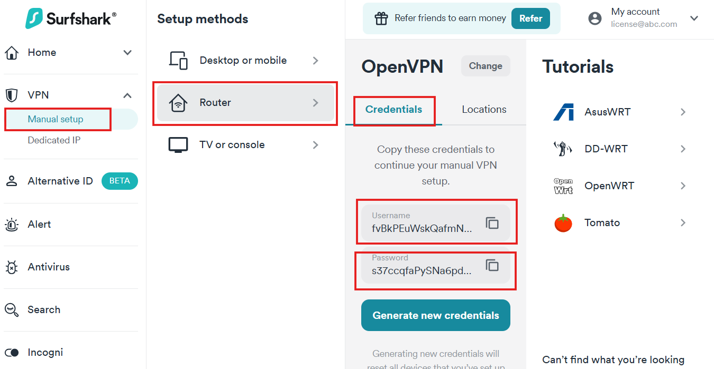
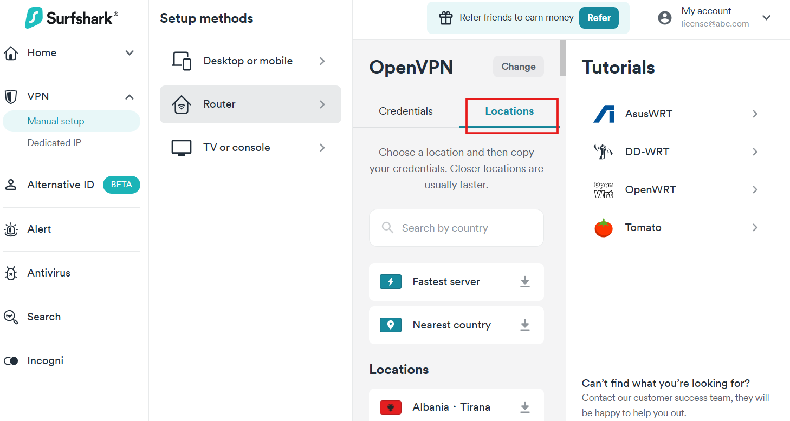
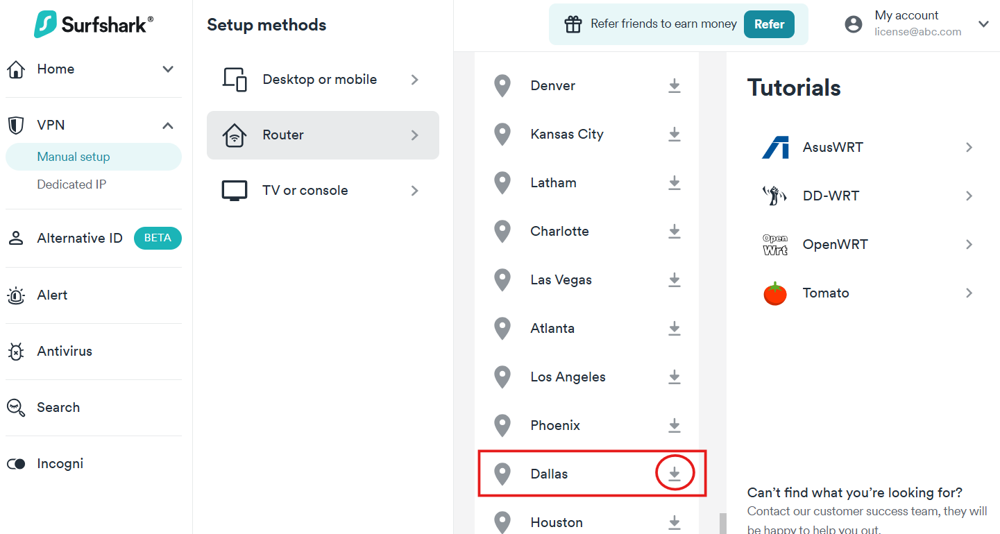
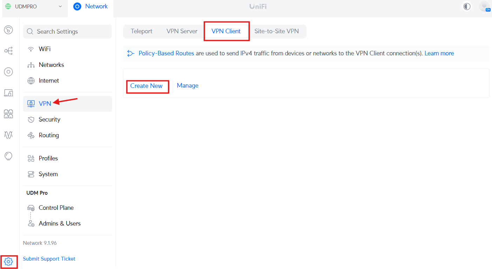
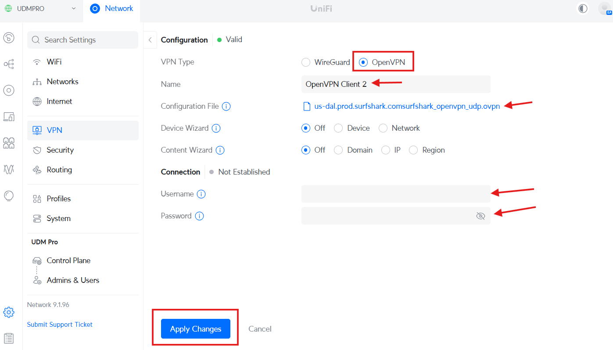
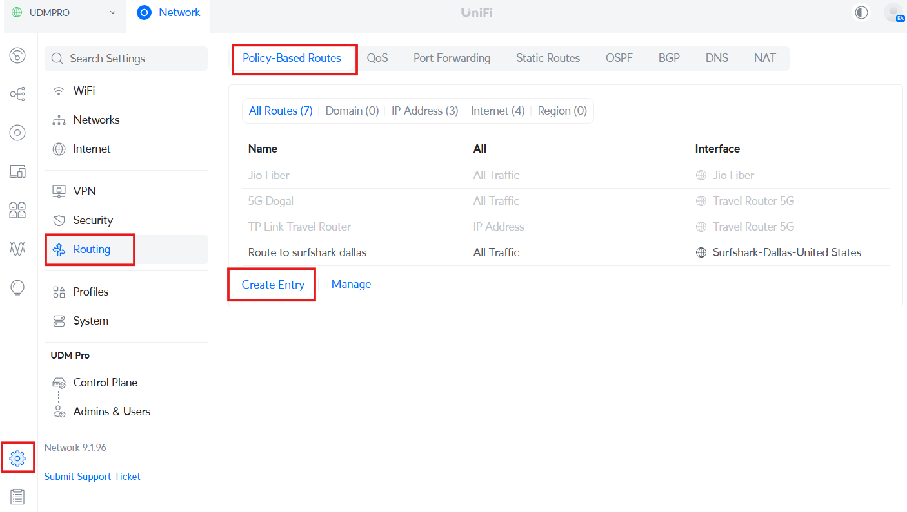
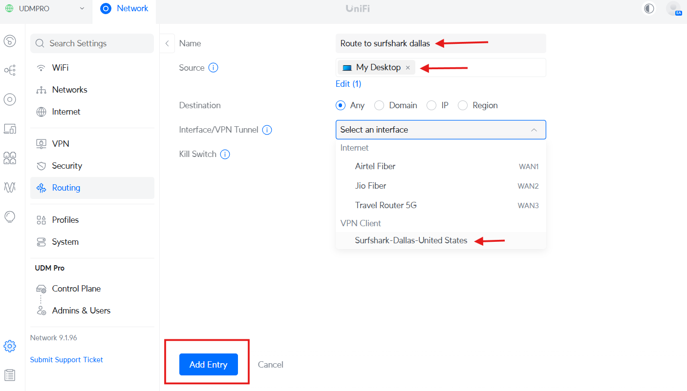
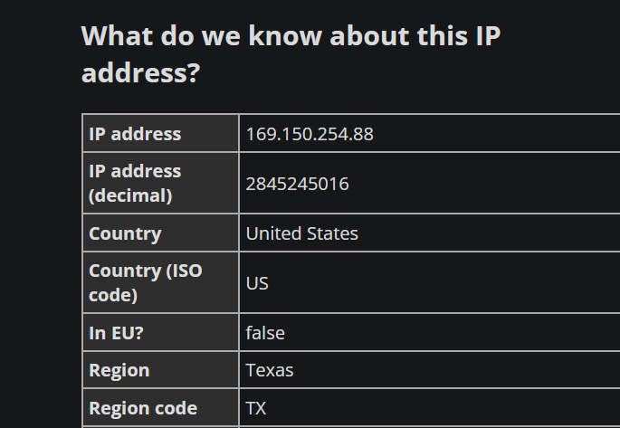

Configuring UniFi VPN Proxy Service with Surfshark using UDM Pro
Setting up a VPN on your UniFi Dream Machine Pro (UDM Pro) using Surfshark can provide a more secure and private internet experience. This guide walks you through the configuration process step by step.
Step 1: Retrieve OpenVPN Configuration from Surfshark
- Log in to your Surfshark account (or any VPN provider that supports Manual configuration options).
- Navigate to the Manual Setup section from the left panel.
- Select Router and choose OpenVPN.
- Copy your OpenVPN username and password for later use.
- Choose a server location and download the corresponding UDP configuration file (.ovpn).



Step 2: Configure VPN Client in UniFi Console
- Log in to your UniFi Console.
- Navigate to Settings > VPN > VPN Client.
- Click on Create New VPN Client and select OpenVPN.
- Enter the following details:
- Name: Provide a descriptive name (e.g., "Surfshark VPN").
- Username: Paste the Surfshark OpenVPN username.
- Password: Paste the Surfshark OpenVPN password.
- Click on Upload and select the .ovpn configuration file downloaded earlier.
- Click Apply Changes at the bottom.
- Wait for a couple of minutes for the VPN connection to establish.
- If the Apply Changes button seems unresponsive, navigate to a different menu and return to the VPN Client tab to check the connection status.


Step 3: Configuring VPN Traffic Routing
Now that the VPN Client is connected, you need to decide how to use it. Below are three ways to configure VPN traffic routing:
1. Device-Specific VPN Connection
This method routes traffic from specific devices through the VPN tunnel.
- Connect the device (e.g., smartphone, smart TV, or IoT device) to your WiFi.
- In the UniFi Console, go to Traffic Routes.
- Click Create New Rule and configure:
- What to Route?: All Traffic
- On: Select your device(s) from the list.
- Interface: Choose the VPN client configured earlier.
- Description: Provide a descriptive name.
- Click Apply to enforce the rule.



2. URL-Specific VPN Connection
This method ensures that only specific domain traffic passes through the VPN.
- Go to Traffic Routes in the UniFi Console.
- Create a new rule with the following settings:
- What to Route?: Specific domains (e.g., streaming services, work-related sites, etc.)
- Domains: Enter the domain(s) to be routed through the VPN.
- Interface: VPN (select the VPN Client set up earlier).
- Description: Add a meaningful description.
- Click Apply to save the rule.
3. Network-Specific VPN Connection
Create a separate network where all connected devices use the VPN.
- Navigate to Networks in the UniFi Console.
- Click Create New Network.
- Configure the following settings:
- Name: Secure VPN Network (or any preferred name).
- VLAN ID: Assign a unique VLAN ID.
- Gateway/Subnet: Define a subnet for this network.
- DHCP Mode: Enable DHCP.
- In the Traffic Routes section, create a new rule:
- What to Route?: All traffic from the secure VLAN.
- Interface: VPN.
- Description: Identify the purpose of the rule.
- Click Apply to enforce the network-wide VPN.
Conclusion
Your UniFi UDM Pro is now configured with Surfshark VPN, and you have the flexibility to choose how your traffic is routed. Whether it’s for a single device, specific domains, or an entire network, these steps ensure a secure and private internet experience. Keep in mind that VPN connections are not 100% stable and may occasionally disconnect, requiring a manual reconnection. Happy browsing!